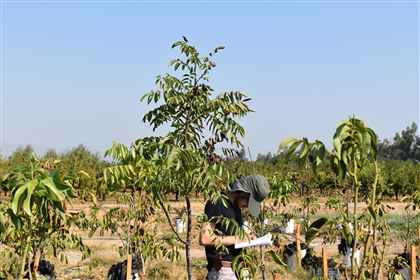
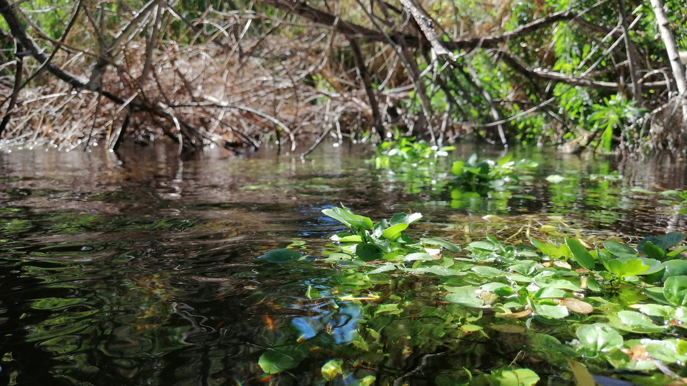
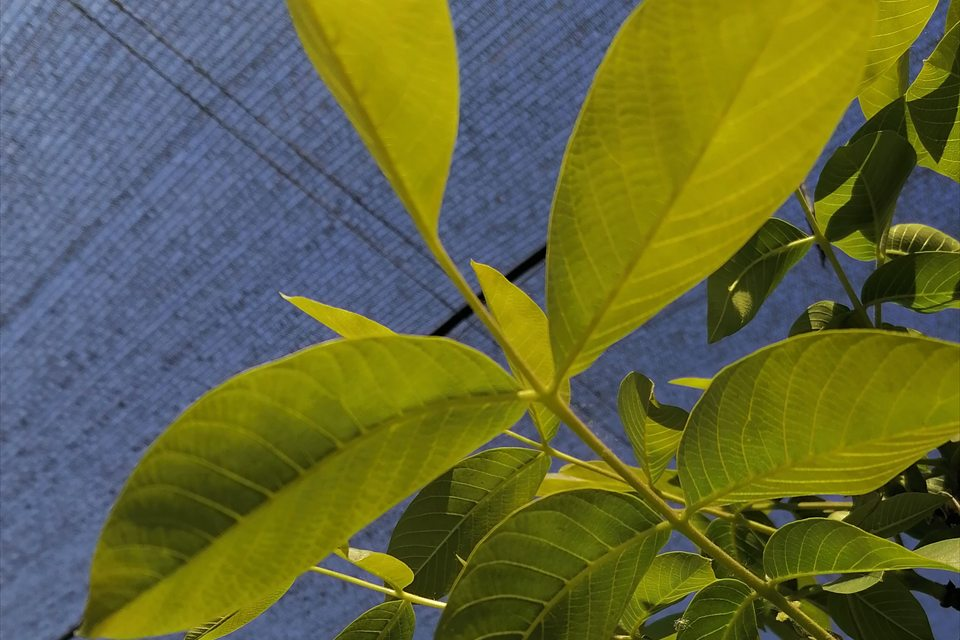
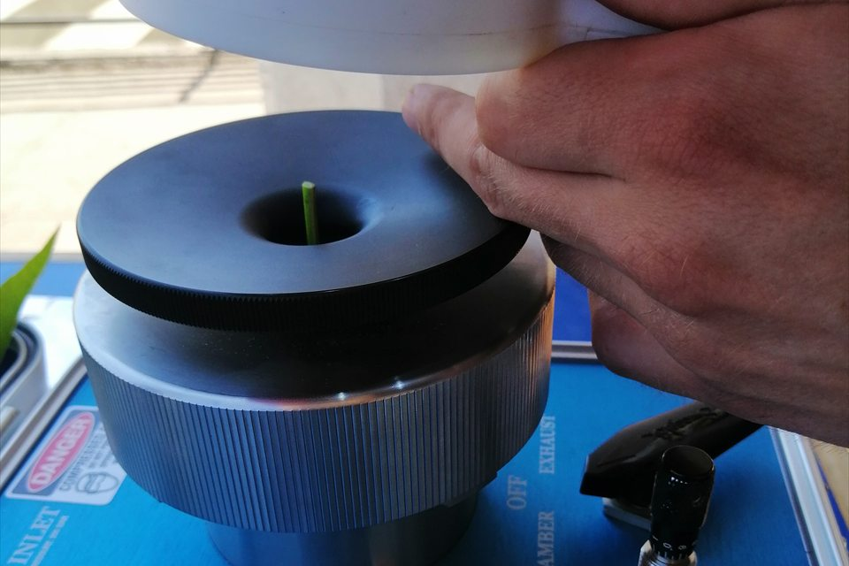
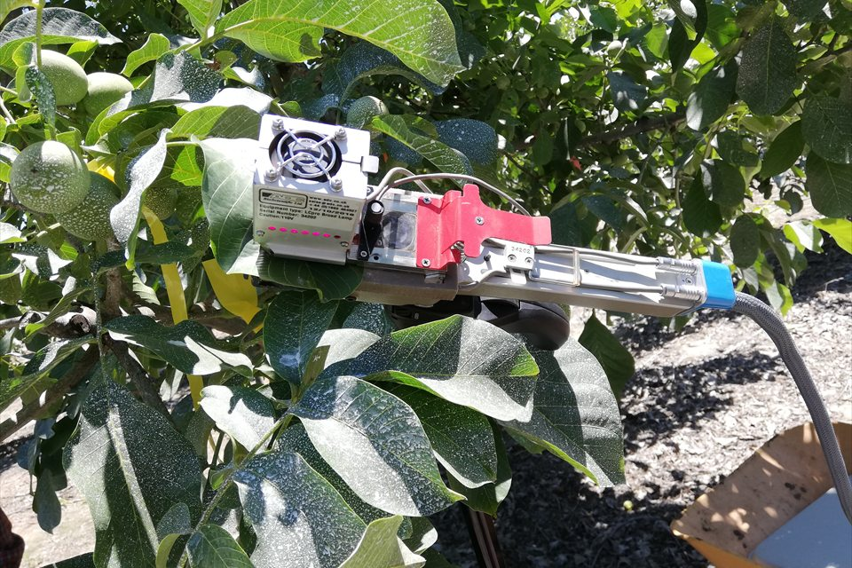
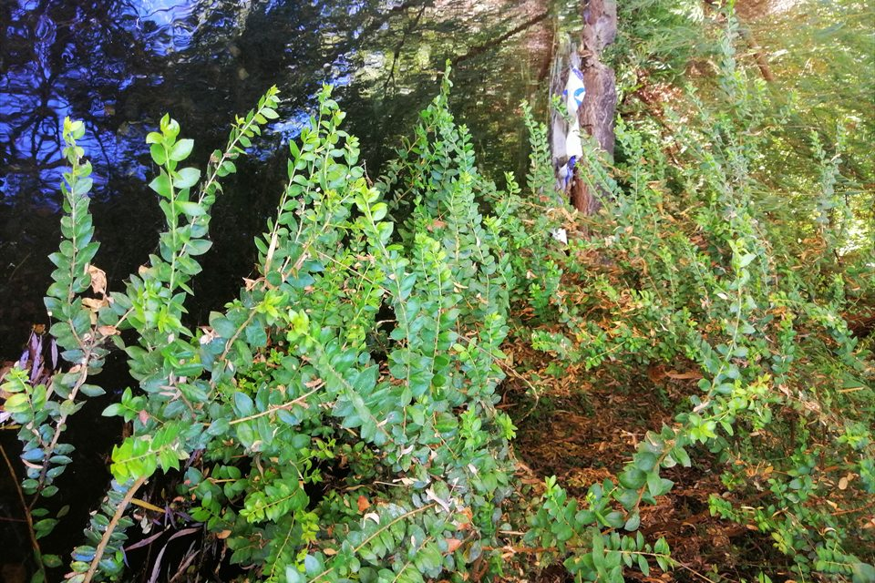

Este mes destacamos
--
Conoce la investigación destacada de integrantes de REDLEV.
Leer resumen completo


Ciencia vegetal en red
REDLEV conecta a científicas y científicos de Latinoamérica para crear redes, compartir conocimiento y dar visibilidad a la ciencia de nuestra región.
Una comunidad latinoamericana en movimiento
La REDLEV promueve la colaboración internacional entre instituciones e investigadores interesados en la ecofisiología vegetal en América Latina.
La ecofisiología vegetal investiga cómo las plantas perciben y responden a su ambiente, conectando procesos como la fotosíntesis, la respiración y las relaciones hídricas con su supervivencia, distribución y productividad. Al integrar escalas que van desde los tejidos hasta los doseles, los ecosistemas y el planeta, ayuda a comprender y anticipar la adaptación de la vegetación y los cultivos ante el estrés y el cambio climático.
Síntesis basada en Ainsworth, Bernacchi y Dohleman (2016), “Focus on Ecophysiology”, Plant Physiology 172(2): 619–621.




Envíanos tus datos.
Este mes destacamos
Conoce la investigación destacada de integrantes de REDLEV.

Escríbenos o completa el formulario de contacto. Mantendremos este espacio actualizado con actividades e investigación destacada.